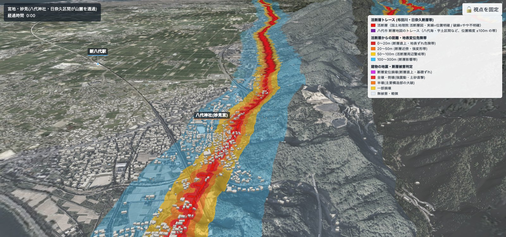

01
断層はどこを通っているか
国土地理院の活断層図の断層線を、航空写真の 3D 地形に重ねます。断層から 20 m 以内（地表のずれの危険帯）・100 m 以内（近傍の警戒帯）を塗り分け、地表を「活断層からの距離」で塗ると、断層のすぐ近くにある家や道路が一目で分かります。日奈久区間は八代平野と九州山地の境目、山の麓を通っています。
- 国土地理院 活断層図
- 八代市 断層地図
- 20 m / 100 m / 300 m 帯